1. SDLC 개요와 생명주기 모델 비교 (원본 p.9-13)
가. SW 개발 생명주기(SDLC)의 정의와 출현배경
SDLC(Software Development Life Cycle)는 소프트웨어가 타당성 조사로부터 개발, 유지보수, 폐기까지의 전 과정을 하나의 주기로 보고 이를 단계별로 나눈 것으로, 조직 내에서의 장기적인 개발 계획과 개발 과정 중심의 관점을 제공하는 프로세스 모델(소프트웨어 공학 패러다임)이다. SW 규모가 커지면서 발생한 소프트웨어 위기에 대한 대처, 효과적인 개발 수행의 필요성(과거 전체 SW 프로젝트의 약 60%가 실패), 고품질 소프트웨어의 생산성 확보 필요성이 SDLC 출현의 배경이 되었다. SDLC는 프로젝트 비용 산정과 개발 계획 수립, 용어·산출물 구성 등의 표준화, 개발 진행 상황 파악 및 프로젝트 관리를 지원하는 기능을 한다.
나. 소프트웨어 생명주기의 구성 단계
| 구성 단계 | 내용 |
|---|---|
| 타당성 조사·요구 명세화 | 고객과 사용자가 원하는 바를 명세화. 타당성 조사, 소프트웨어의 기능과 제약 조건을 정의하는 명세서 작성(요구사항은 일반적으로 모호·불완전·모순되는 성질이 있음) |
| 분석 | 대상 문제 영역과 사용자가 원하는 Task를 이해하는 단계(예: 개념 모델, 비즈니스 모델) |
| 설계 | 분석 모델을 세분화하여 구현 가능한 형태로 전환(예: 개발 언어·운영체제에 종속적인 설계 모델) |
| 개발 | 실행 코드 생성 |
| 시험 | 실행 프로그램의 오류를 발견·수정(예: Alpha-testing(in-house), Beta-testing(by users)) |
| 유지보수 | 인수 완료 후 일어나는 모든 개발 활동(예: Upgrades(perfective), Fixes(corrective)) |
다. SW 생명주기 대표 모델 비교
| 모델 | 내용 |
|---|---|
| 폭포수 모델(Waterfall) | 검토·승인을 거쳐 순차적·하향식으로 개발이 진행되는 모델. 장점: 이해하기 쉬움, 단계 검증 후 진행, 관리 용이. 단점: 요구사항 도출이 어려움, 설계·코딩·테스트 지연, 문제점 발견 지연 |
| 원형 모델(Prototyping) | 시스템의 핵심 기능을 먼저 만들어 평가한 후 구현하는 점진적 개발 방법. 장점: 요구사항 도출·시스템 이해 용이, 의사소통 향상. 단점: 완제품으로 오해, 폐기되는 프로토타입 존재 |
| 나선형 모델(Spiral) | 폭포수와 프로토타이핑 모델의 장점에 위험분석을 추가한 모델(B. Boehm) — 계획수립·위험분석·개발·평가의 4단계 반복. 장점: 점증적 개발로 실패 위험 감소, 테스트 용이, 피드백. 단점: 관리 복잡 |
| 점증적 모델(Iterative & Incremental) | 시스템을 여러 번 나누어 릴리스하는 방법. Incremental은 기능을 분해해 릴리스마다 추가 개발, Iterative는 전체 기능을 대상으로 릴리스를 거듭하며 완벽해짐 |
라. SW 개발 생명주기 단계별 선정 기준
| 단계 | 설명 |
|---|---|
| 계획 | 사용자의 문제를 정의하고 시스템이 갖추어야 할 기본기능·성능요건을 파악해 기본요구로 전환 |
| 분석 | 사용자 문제를 구체적으로 이해하고 소프트웨어가 담당해야 하는 정보영역을 정의(의사소통 기술이 필수) |
| 설계 | 소프트웨어의 구조와 성분을 명확히 밝혀 구현을 준비. 외부설계/내부설계 또는 기본설계/상세설계로 구분 |
| 구현 | 프로그래밍 단계 — 각 모듈의 코딩·디버깅 및 단위(모듈) 시험 수행 |
| 시험 | 개발된 모듈을 통합해 시험 — 단위·통합·시스템·인수·설치 테스트로 구분 |
| 운영 및 유지보수 | 소프트웨어 이용 중 발생하는 문제점을 수정하거나 새 기능을 추가해 발전시키는 단계 |
2. 폭포수(Waterfall) 모델 (원본 p.14-20)
가. 폭포수 모델의 정의와 특징
폭포수 모델은 고전적 라이프사이클 패러다임(Classic Life-cycle Paradigm)으로, 분석·설계·구현(프로그래밍)·시험·유지보수 과정을 순차적으로 접근하는 방법이다. 개념 정립에서 구현까지 하향식 접근(높은 추상화 단계 → 낮은 추상화 단계)을 사용하며, 각 단계 종료 시 검증 후 다음 단계로 진행(이전 단계 산출물이 다음 단계의 기초가 됨)한다. 프로젝트 진행과정을 세분화하여 관리하기 용이하지만, 목표 시스템이 후반부에 가서야 구체화되므로 중요한 문제점이 뒤늦게 발견되는 경우가 많다.
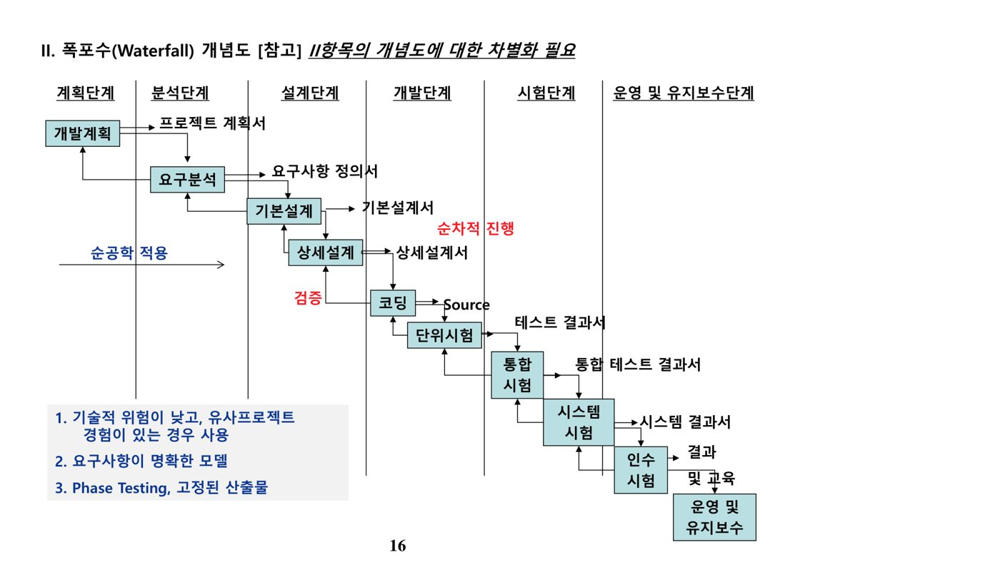
나. 폭포수 모델의 장단점
| 장점 | 단점 |
|---|---|
| 가장 오래되고 폭넓게 사용(사례 풍부), 전체 과정 이해 용이, 관리 용이(세분화), 기술적 위험이 작고 경험이 많은 경우 비용·일정 예측 용이, 문서 관리·적용 용이 | 초기에 요구사항 정의가 어려움, 중요 문제점의 발견이 늦어짐(후반부에 구체화), 전 단계가 종결되어야 다음 단계 수행 가능, 사용자 피드백에 의한 반복이 불가능, 초기 단계 강조 시 코딩·테스트 지연 |
다. 반복/진화적 개발방법과의 비교
| 항목 | 반복/진화적 개발방법 | 폭포수형 개발방법 |
|---|---|---|
| 수행원리 | Iterative(반복적·점증적 접근) | Top-down(하향식·단계적 접근) |
| 주요산출물 | 반복수행 계획서, 사용자 피드백 | 요구명세서, 요구추적매트릭스 |
| 설계 | 점진적 구체화·설계 | 상세화 설계 |
| 개발 | 반복 단위로 반복적 개발 | 순차적·단계적 개발 |
| 테스트 | 회귀테스트의 필요성 높음 | 빅뱅테스트를 주로 이용 |
| 배포 | 반복적·지속적인 배포 | 종료 단계에 배포 |
3. 프로토타이핑 모델 (원본 p.21-24)
가. 프로토타이핑 모델의 정의와 목적
프로토타이핑 모델은 사용자의 요구사항을 충분히 분석할 목적으로 시스템의 중요 일부분을 우선 구현한 후, 다시 요구사항을 반영하는 과정을 반복하는 점진적 개발모델이다. 요구 분석의 어려움을 해결하기 위해 사용자의 참여를 유도하고, 요구사항 도출·이해를 위한 커뮤니케이션 수단(의사소통 도구)으로 활용한다. 사용자 자신이 원하는 바를 구체적으로 모르는 경우 간단한 시제품으로 개발 타당성을 검토할 수 있으며, 폭포수 모델의 단점을 보완하는 성격을 가진다.
나. 프로토타이핑 모델의 절차와 장단점
절차: 요구분석 → Prototype 개발/개선 → 검토·평가(Feedback) → (필요 시 개발·개선 반복) → 상세개발·설치, 실효성 미비 시 프로젝트 취소.
| 장점 | 단점 |
|---|---|
| 사용자 요구사항 도출이 용이, 시스템 이해와 품질 향상, 개발자와 사용자 간 의사소통 원활 | 프로토타입 결과를 최종 결과물로 오해, 폐기 시 비경제적(Overhead), 중간단계 산출물 문서화 어려움 |
| 관점 | 문제점 | 해결 방안 |
|---|---|---|
| 개발자 | 시간낭비라는 인식으로 거부감 | 효율적인 교육으로 의사소통의 중요성 인지 및 활성화 관리 |
| 관리자 | 프로젝트 관리 부실화 발생 가능 | 체계적인 개발 체제 및 관리도구 도입 |
| 사용자 | 요구사항에 대한 신속한 결과 기대 | 프로토타입과 결과물 간의 차이를 인지하도록 설득·교육 |
4. 나선형(Spiral) 모델 (원본 p.25-32)
가. 나선형 모델의 정의와 4단계
나선형 모델은 Waterfall Model과 Prototyping Model의 장점에 위험분석(Risk Analysis)을 추가한 모델(Barry Boehm)로, 다음 4단계를 반복(나선형으로 회전)하며 점증적으로 시스템을 완성한다.
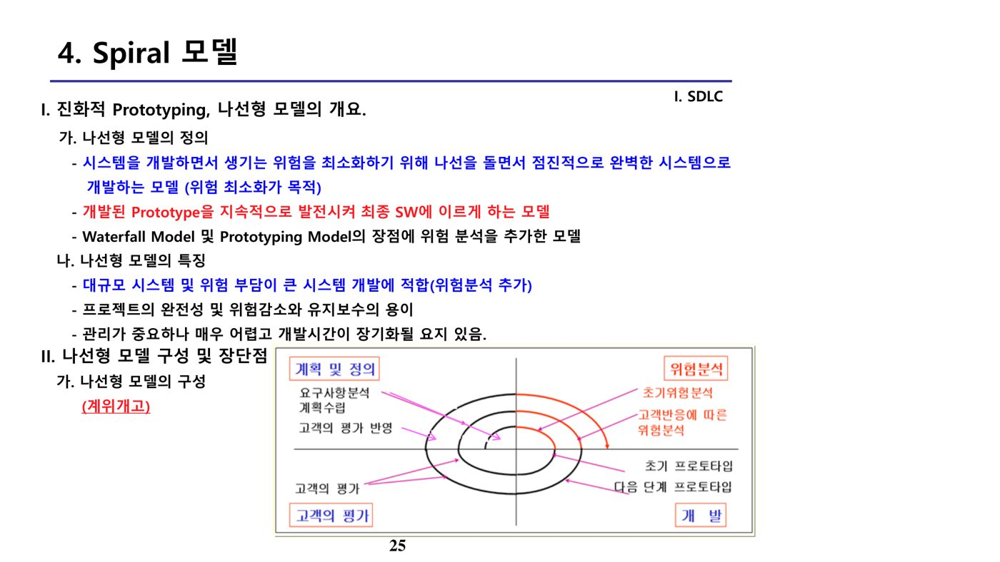
- 계획수립(Planning): 목표, 기능 선택, 제약조건 설정
- 위험분석(Risk Analysis): 기능 선택 우선순위, 위험요소의 분석과 제거
- 개발(Engineering): 선택된 기능의 개발
- 평가(Evaluation): 개발 결과의 평가
나. 나선형 모델의 장단점과 폭포수 모델과의 비교
| 구분 | 나선형 모델 | 폭포수 모델 |
|---|---|---|
| 정의 | Waterfall·Prototyping의 장점에 위험분석을 추가한 모델 | 분석·설계·개발·구현·시험·유지보수를 순차적으로 접근하는 방법 |
| 장점 | 정확한 사용자 요구사항 파악, 위험 부담 감소, 품질 확보 | 가장 오래되고 폭넓게 사용, 전체 과정 이해 용이, 관리 용이, 문서 관리·적용 용이 |
| 단점 | 많은 시간 소요, 관리 어려움(복잡), 위험관리 능력이 성공에 영향, 다수 고객 상대 상용제품 개발에는 부적합 | 초기 요구사항 정의 어려움, 후반부 문제 발견, 전 단계 종결 후 진행, 사용자 피드백 반복 불가 |
| 적용범위 | 대규모 시스템 및 위험 부담이 큰 시스템 개발 | 기술적 위험이 낮고 유사 프로젝트 경험이 있는 경우 |
나선형 모델은 비선형적이며 반복적으로 개발이 진행되므로 소프트웨어의 강인성(Robustness)을 높일 수 있으며, 개발자·사용자가 각 확장 단계에서 발생할 위험에 대한 이해와 대책을 세울 수 있어 프로젝트 실패 위험을 사전에 최소화할 수 있다.
5. 반복·증분적 개발 모델과 RAD (원본 p.33-38)
가. 반복적 개발 모델(Iteration Model)
사용자 요구사항의 일부분 또는 제품의 일부분을 반복적으로 개발하여 최종 시스템으로 완성하는 모델로, 재사용·객체지향·RAD를 기반으로 제공된다. 증분형(Incremental) 개발 모델과 진화적(Evolutional) 개발 모델로 구분된다.
| 구분 | 내용 |
|---|---|
| 증분형 모델의 정의 | 사용자 요구사항·제품의 일부분을 반복적으로 개발하면서 대상 범위를 확대해 최종 제품을 완성하는 방법 |
| 특징 | 폭포수 모델의 변형으로 증분을 따로 개발 후 통합(프로토타이핑의 반복 개념을 선형순차 모델 요소에 결합). 프로토타이핑처럼 반복적이나 각 증분이 갖는 제품 인도에 초점(요구사항이 명확할 때 적용) |
| 규모 | 규모가 큰 개발 조직은 각 증분 개발에 자원을 충분히 할당해 병행 개발로 기간 단축 가능. 단, 증분 수가 많고 병행 개발이 빈번하면 관리가 어려워져 PM의 조율 노력이 많이 필요 |
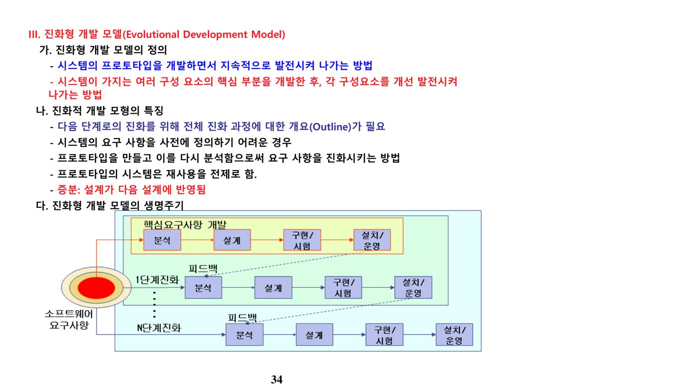
나. RAD(Rapid Application Development) 모델
RAD는 2~3개월의 짧은 개발 주기 동안 소프트웨어를 개발하기 위한 순차적 프로세스 모델로, 빠른 개발을 위해 Visual Tool·Code Generation Tool을 사용한다. CASE 도구·RDB·재사용 Library 등을 적극 활용하고 Prototyping을 사용하며, 사용자가 요구사항 정의·분석·설계 과정에 적극 참여한다. 소요기간은 60~90일 정도로 짧아 기술적 위험이 적고 빠른 개발이 요구될 때 적합하다.
| 단계 | 내용 |
|---|---|
| JRP(Joint Requirement Planning) | 분석단계 — 공동 요구사항 정의. 사용자와 함께 Biz모델 작성·검토를 반복하며 데이터·프로세스 모델링(1~2주)을 짧게 수행 |
| JAD(Joint Application Design/Development) | 설계단계 — 참여 공동 설계. 개략적 모델링 후 사용자와 함께 Prototype 개발·수정·보완을 반복(3~5주) |
| Construction phase | SDLC와 유사한 프로그램·애플리케이션 개발 작업에 집중 |
| Cutover(구축/운영) | 운영에 필요한 지침서를 작성하고 현업부서로 이전 |
| 구분 | RAD 기법 모델 | 전통적 생명주기 |
|---|---|---|
| 목표 | 핵심 요구사항 만족, 시간 단축 | 고품질 구현 |
| 개발인원 | 소규모, 사용자+개발자 | 대규모 |
| 분석/설계 | 개략적 분석/설계 | 완벽한 분석/설계 |
| 기법 | JRP, JAD, Time-boxing | 데이터 모델링, 프로세스 모델링 |
6. SW 개발방법론 개요와 비교 (원본 p.40-46)
가. SW 개발방법론의 정의와 필요성
SW 개발방법론(SW Development Methodology)은 소프트웨어 개발에 관한 계획·분석·설계·구축에 관련된 정형화된 방법과 절차, 도구 등을 공학적 기법으로 체계적으로 정리해 표준화한 이론으로, 정보시스템을 개발하기 위한 작업활동·절차·산출물·기법을 정리한 것이다. 개발경험 축적·재활용을 통한 생산성 향상(표준화·모듈화), 효과적인 프로젝트 관리(수행공정 가시화), 정형화된 절차·표준용어를 통한 의사소통 수단 제공이 개발방법론의 필요성이다. 방법론은 시대에 따라 구조적 → 정보공학 → 객체지향 → CBD → Agile/제품계열/도메인공학의 순으로 진화해 왔다.
나. SW 개발방법론의 구성요소
| 구성요소 | 내용 |
|---|---|
| 작업절차 | 프로젝트 수행 시 이루어지는 작업단계의 체계(단계-활동-작업, 활동 순서 명시) |
| 작업방법 | 각 단계별 수행해야 하는 일(누가, 언제, 무엇을 작업하는지 기술) |
| 산출물 | 각 단계별로 만들어야 하는 산출물의 목록 및 양식(설계서 등) |
| 관리 | 프로젝트의 진행 기록(계획수립, 진행관리, 품질, 외주, 예산, 인력관리 등) |
| 기법 | 각 단계별 작업수행 시 기술·기법 설명(구조적, 객체지향, ERD, DFD 등) |
| 도구 | 기법별 지원도구의 구체적 사용표준 및 방법(CASE, UML Tools 등) |
다. 개발방법론의 종류와 비교
| 구분 | 설명 | 특징 |
|---|---|---|
| 구조적 방법론 | 정형화된 분석 절차에 따라 사용자 요구사항을 파악·문서화하는 체계적 분석 이론 | 프로그램 로직(프로세스) 중심, 도형중심 분석용 도구(자료흐름도 DFD, 자료사전 DD, 소단위명세서) |
| 정보공학 방법론 | 기업 정보시스템에 공학적 기법을 적용해 계획·분석·설계·구축하는 데이터중심 방법론 | 기업정보시스템 중심, ISP 필수, 데이터 중심, CASE도구 등 공학적 접근·사용자 참여, 데이터-프로세스 상관분석 |
| 객체지향 개발방법론 | 분석·설계·개발에서 객체지향 기법을 활용해 시스템을 구축하는 방법론 | 업무영역을 상호작용하는 객체들의 집단으로 이해, 자료와 기능을 캡슐화, 객체 간 상호작용은 메시지를 통해 이루어짐 |
| CBD | 재사용 가능한 컴포넌트를 개발·조합해 개발 생산성·품질을 높이고 유지보수 비용을 최소화하는 방법 | 컴포넌트 기반 개발, 반복점진적 개발프로세스 제공, 표준화된 산출물·재사용성 향상 |
| 구분 | 구조적 기법 | 정보공학 기법 | 객체지향 기법 | CBD 기법 |
|---|---|---|---|---|
| 시기 | 1970년대 | 1980년대 | 1990년대 | 2000년대 |
| 중점 | 기능 중심 | 자료구조 중심 | 객체 중심 | 컴포넌트 중심 |
| 특징 | 분할과 정복, 하향식 기능분해 | 데이터와 프로세스 균형 | 캡슐화·추상화·다형성·정보은닉·상속(다정상 등), 분석 초점 명확 | 반복·점진적, 높은 재사용성 |
| 장점 | 프로세스 중심 방식 개발 유용 | 자료중심으로 비교적 안정적 | 모듈별 재사용 자연스럽고 유연 | 생산성·품질·비용·위험 개선, SW위기 극복 |
| 단점 | 기능은 불안정한 요소, 데이터 정보은닉 안 됨, 낮은 재사용성 | 여전히 기능적 설계, 유지보수·재사용성 낮음 | 실질적 재사용이 어려움, 기본 SW 기술 필요 | 컴포넌트 유통 환경 개선 필요, 테스트·인증 환경 미흡 |
7. 구조적 개발방법론과 정보공학 방법론 (원본 p.47-59)
가. 구조적 개발방법론의 정의와 특징
구조적 개발방법론은 정형화된 분석 절차에 따라 사용자 요구사항을 파악해 문서화하는 체계적 분석 이론으로, 소프트웨어 모듈화의 활성화를 시작으로 기능적 분할을 시도해 Top-down Programming을 수행하는 개발방법이다. 전체 기능 관점에서 Top-down으로 진행하며, 도형 중심의 분석용 도구(자료흐름도, 자료사전)를 이용한다. 구조적 분석의 기본원칙은 결합도는 낮추고 응집도는 높이는 것이며, 분할과 정복·추상화·정형화·구조적 조직화·하향식 기능 분해를 원칙으로 한다.
| 원칙 | 설명 |
|---|---|
| 추상화의 원리(Principle of Abstraction) | 문제를 이해하기 쉽고 간단한 형태로 표현(→ Model). "어떻게"가 아닌 "무엇"에 집중. 최하위 계층은 상세, 최상위 계층은 추상적·간단 |
| 형식화의 원리(Principle of Formality) | 일정한 규칙과 엄격한 방법론적 접근을 채택해 가시화. 프로젝트 제어와 산출물 품질관리의 기초로 활용 |
| 분할 정복(Divide-and-Conquer) | 복잡하고 큰 시스템을 작고 독립적인 서브시스템으로 나누고(분할), 이를 쉽게 해결(정복)하는 개념 |
| 계층 구조(Hierarchical Structure) | 이해를 돕기 위해 트리(Tree) 개념으로 전개. 여러 작은 독립적 모듈을 계층적 구조로 배열 |
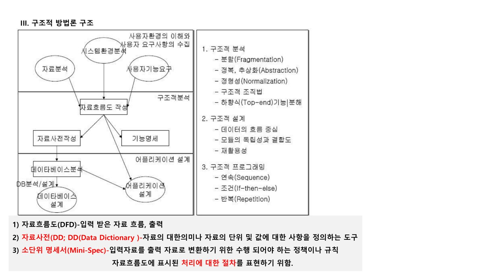
나. 정보공학(Information Engineering) 방법론
정보공학 방법론은 기업 전체 또는 주요 부분의 계획·분석·설계·구축에 정형화된 기법들을 상호 연관성 있게 통합·적용하는 데이터 중심 방법론으로, C.Finkelstein이 처음 사용하고 James Martin이 폭넓게 전파했다. 기업의 전략경영을 지원하기 위해 SIS(Strategic Information System)에 초점을 맞추며, 정보공학 4단계 중 가장 먼저 시작하는 ISP(Information Strategy Planning)를 중시한다. 기업의 업무 프로세스는 수시로 변하지만 보유 데이터는 대체로 변하지 않는다는 전제 아래, 프로세스와 데이터를 분리해 분석·설계하되 상관분석(Interaction Analysis)으로 상호 검증한다.
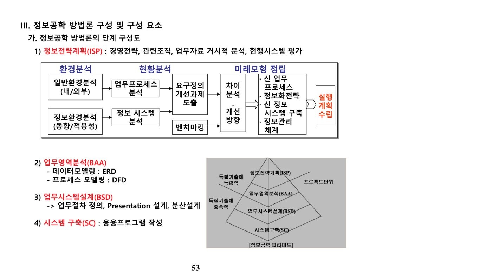
| 단계 | 특징 |
|---|---|
| 경영전략 분석 | 기업의 내·외부 환경 분석 및 비전·전략 도출 |
| 현행 업무 프로세스 분석 | 문제점 및 개선방안 도출 |
| 현 시스템 분석·평가 | 현 시스템의 문제점 도출·평가 후 개선방안 도출 |
| 아키텍처 개발 | 후속 작업을 지원하기 위한 프로세스 모델·데이터 모델 개발 |
| 전략계획 | 프로젝트 정의 및 우선순위 부여 |
| 산출물 | 내용 |
|---|---|
| 데이터 모델 다이어그램 | ISP 과정의 ERD를 보다 상세하게 확장한 다이어그램 |
| 프로세스 분할 다이어그램 | 업무영역 내 기능들을 프로세스로 분할한 트리 구조의 분할도 |
| 프로세스 의존 다이어그램 | 프로세스 간 선후행 의존관계를 나타냄 |
| 프로세스/데이터 매트릭스 | 프로세스-데이터 간 CRUD(생성·읽기·갱신·삭제) 행위를 매트릭스로 표현해 모델 검증 |
다. SW공학과 정보공학의 비교, ISP와 EA의 비교
| 구분 | SW 공학 | 정보 공학 |
|---|---|---|
| 개념 | SW 개발을 공학적으로 개발하기 위한 미시적 개념 | 기업 정보시스템 개발을 공학적으로 접근하는 거시적 개념 |
| 주요사상 | 프로세스 중심 구현 | Data 중심 구현 |
| 적용규모 | 소규모 S/W 개발 | 대규모 기업 시스템 구축 |
| SDLC 비중 | 개발단계 | 분석·설계단계 |
| 구분 | ISP | EA |
|---|---|---|
| 수행목적 | 향후 구축할 시스템의 계획 수립, 업무파악을 통한 정보계획 수립 | 전사적 자원관리 전 과정(선정·개발·유지보수)에 활용, 정보교환 내용 파악을 통한 아키텍처 개발 |
| 도출과정 | 컨설턴트의 직관적 판단, Business 전략 분석에 의존적 | 모델링 기법, 다양하고 객관적인 준거 자료로 아키텍처 구성 |
| 산출물 | To-be Architecture(최종산출물) | EA비전·원칙·프레임워크, EA정보(현행·목표), 이행계획, EAMS 등 |
8. 객체지향(OOP) 특성과 SOLID 원칙 (원본 p.60-84)
가. 객체지향의 정의와 5대 특성("캡추다정상")
객체지향(Object Oriented)은 실세계의 개체(Entity)를 속성(Attribute)과 메소드(Method)가 결합된 형태의 객체(Object)로 표현하는 개념으로, 구현 대상을 객체와 객체 간의 관계로 모델링한다. 소프트웨어 위기 해결을 위한 대안 필요성 증대, 사용 편의성에 대한 사용자 요구 증대가 등장 배경이다. 5대 특성은 "캡추다정상"(캡슐화·추상화·다형성·정보은닉·상속성)으로 암기한다.
| 구분 | 개념 | 역할 | 특징 |
|---|---|---|---|
| 캡슐화(정보은닉) | 객체의 상세한 내용을 외부에 철저히 숨기고 메시지만으로 상호작용하게 하는 성질 | 내부구조와 실체 분리로 변경 영향 최소화, 유지보수 용이 | public/private 선언으로 외부 접근 통제 |
| 추상화 | 현실세계 사실을 객체로 공통 속성·기능을 묶어 이름을 부여 | 복잡한 프로그램을 간단하게 하고 분석의 초점을 명확히 함 | 명사 → 데이터 추상화(type), 동사 → 기능 추상화(method) |
| 다형성 | 동일 인터페이스에 대해 서로 다른 처리 방식으로 구현 가능한 특성 | 관련 클래스들을 위한 일관된 매개체 제공 | Overloading(수평적, 동일 이름 사용) / Overriding(수직적, 슈퍼클래스 메서드 재정의) |
| 상속성 | 수퍼 클래스가 갖는 성질을 서브클래스에 자동으로 부여하는 개념 | 프로그램을 쉽게 확장할 수 있는 강력한 수단 | 클래스 체계화, 기존 클래스로부터 확장 용이 |
| 연관성 | 클래스 간의 연관관계를 정의 | 객체 간 관계를 세부적으로 정의해 구현 용이 | 일반화(is-a)·상세화(has-a)·집단화(is-part-of) |
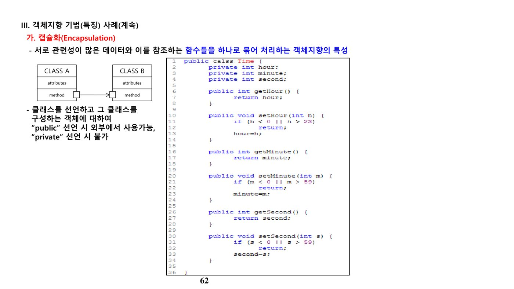
나. 다형성의 구현: 오버로딩과 오버라이딩
오버로딩(Overloading)은 하나의 이름으로 매개변수의 개수·타입이 다른 여러 메서드를 만드는 기법이다(리턴 타입만으로는 구별하지 않음). 오버라이딩(Overriding)은 상위 클래스에 있는 메서드와 똑같은 시그니처의 메서드를 하위 클래스에서 재정의하는 것으로, 다형성의 핵심이다. 상속받은 하위 클래스의 인스턴스가 sayHello()를 호출하면 상위 클래스의 메서드가 아니라 재정의된 하위 클래스의 메서드가 호출된다.
다. 정보은닉과 상속
정보은닉(Information Hiding)은 캡슐화 방법으로 class 내부 정보를 은닉하고 접근 제한 단계를 두어 보안적 구현을 가능하게 한다. 클래스 내부 변수(필드)를 private·protected로 선언해 자기 클래스 또는 자식 클래스 외에는 직접 제어를 불가능하게 하는 성질이며, 복잡하거나 변경 가능한 부분을 캡슐 내부에 감추고 외부에는 안정적인 인터페이스만 제공하는 원리다. 상속(Inheritance)은 미리 만들어 둔 클래스를 다시 이용하는 방법으로, 자바에서는 extends 키워드를, C++에서는 콜론(:)을 사용한다. 하위 클래스는 상위 클래스를 상속받는 순간 상위 클래스의 모든 권한을 갖게 된다.
라. 객체지향 설계 원칙(SOLID)
| 원칙 | 설명 |
|---|---|
| SRP(Single Responsibility Principle) | 단일 책임 원칙 — 클래스는 하나의 책임만 가져야 하며, 변경 이유가 하나여야 함 |
| OCP(Open Closed Principle) | 개방 폐쇄 원칙 — 소프트웨어 Entity(Class, Module, Function)는 확장에는 열려 있고 수정에는 닫혀 있어야 함(Bertrand Meyer). 새 코드를 통해 확장하되 기존 코드는 변경하지 않음(예: Adapter Pattern) |
| LSP(Liskov Substitution Principle) | 리스코프 치환 원칙 — 하위 타입은 상위 타입이 사용되는 곳에 대체될 수 있어야 하며, 상위타입 객체를 하위타입 객체로 치환해도 프로그램이 정상 동작해야 함(1998년 Liskov 제안) |
| ISP(Interface Segregation Principle) | 인터페이스 분리 원칙 — 클라이언트가 자신이 사용하지 않는 메서드에 의존하지 않도록, 하나의 일반적인 인터페이스보다 클라이언트별 특화된 인터페이스 여러 개로 분리 |
| DIP(Dependency Inversion Principle) | 의존성 역전 원칙 — 추상화된 것에 의존하게 만들고 구체 클래스(concrete class)에 의존하지 않도록 함. 자주 변경되는 구체 클래스에 의존하면 그 변경이 상위 모듈에 영향을 미침 |
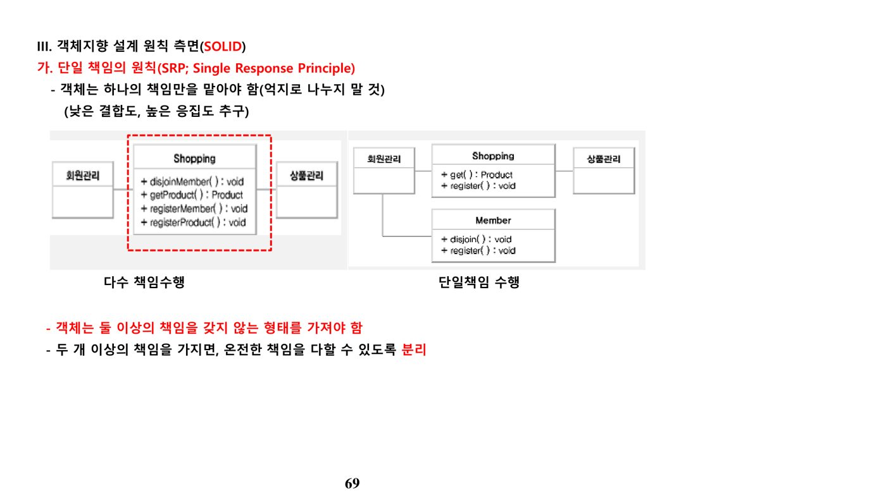
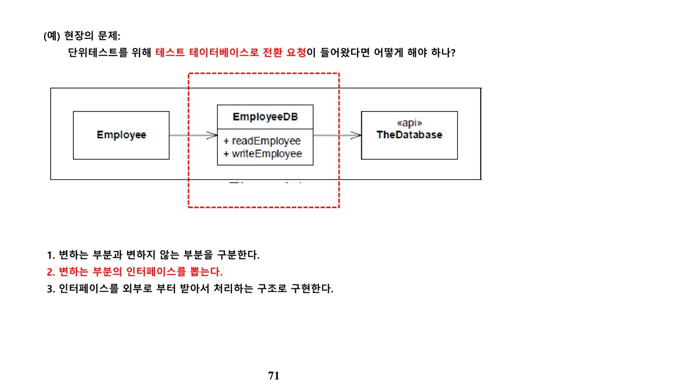
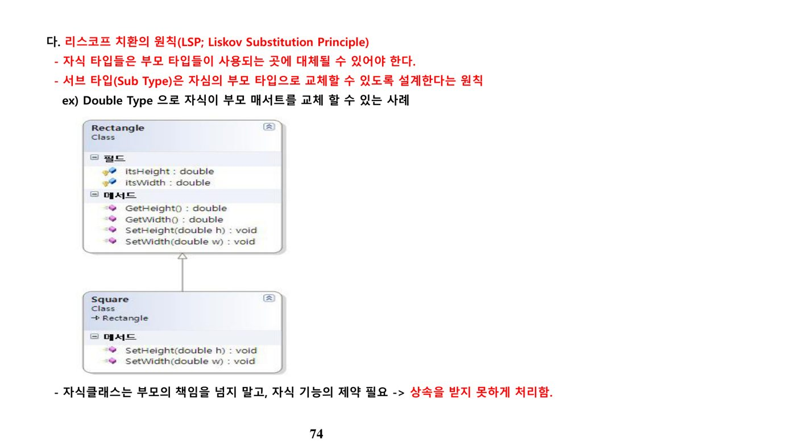
마. 추상화의 유형
| 유형 | 설명 | 사례 |
|---|---|---|
| 자료 추상화 | 데이터 타입 사용 | String, int x, float y |
| 제어 추상화 | 몇 개의 기계 명령어를 모아 이해하기 쉬운 추상 구문으로 만든 것. 제어행위에 대한 개념화, 명령 및 이벤트 | if, for, while |
| 구조적 추상화 | 프로그램 구조에 대한 보다 전역적인 정보에 관한 추상화 | 배열, 레코드 사용 |
| 단위 추상화 | 단위 프로그램 전체 정보에 관한 추상화 | Java의 class 사용 |
| 프로시저 추상화 | 일련의 동작을 하나의 동작으로 처리 | 부프로그램(subroutine) 사용 |
| 기능 추상화 | 클래스 내 메소드를 정의 | 클래스 이름.getName() |
기계어에서 어셈블리 언어로, 어셈블리 언어에서 고급 언어로 표현하는 과정에 적용된 추상화는 제어 추상화(control abstraction)다 — 기계 명령어들을 모아 이해하기 쉬운 추상 구문(if, for, while 등)으로 표현하는 것이기 때문이다.
9. 객체지향 개발방법론과 컴포넌트 (원본 p.85-112)
가. 객체지향 개발방법론의 종류
객체지향 개발방법론은 SW의 요구사항 분석·설계·구축·시험의 전 단계가 객체지향 개념에 입각해 일관된 모델을 가지고 소프트웨어를 개발하는 방법론이다. 실세계 문제 영역에 대한 표현을 소프트웨어 해결 영역으로 매핑하며, 객체 간에 메시지를 주고받는 형태로 시스템을 구성한다. 재사용성·유지보수성·이식성이 뛰어나고, 현실세계·인간의 사고방식과 유사한 모형의 적합성을 가지며, 전체 공정에서 일관성·추적성이 자연스럽다.
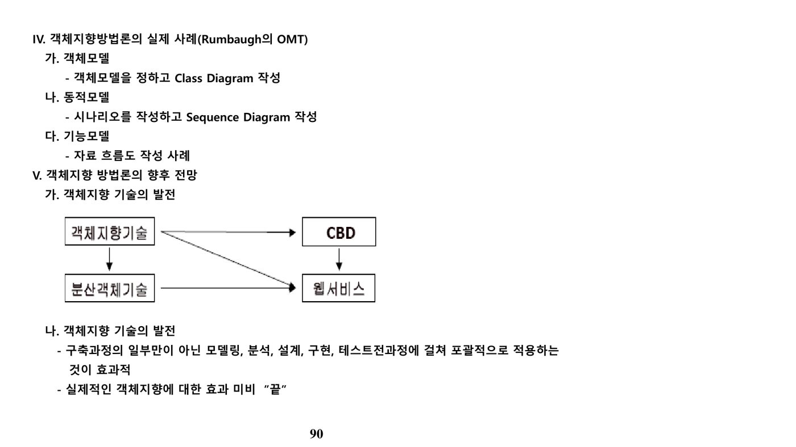
| 종류 | 설명 | 특징 |
|---|---|---|
| OOSE(Jacobson) | Object Oriented SW Engineering — UseCase를 모든 모델의 근간으로 활용하는 접근법 | 분석·설계·구현 단계로 구성, 기능적 요구사항 중심의 시스템 |
| OMT(Rumbaugh) | Object Modeling Technology — 객체지향 분석·시스템설계·오브젝트설계·구현의 4단계 | 객체모델링(정적 구조), 동적모델링(제어흐름), 기능모델링(데이터값 변화) 3가지로 표현. 복잡한 대형 프로젝트에 유용 |
| Booch | OOD(Object Oriented Design)로 설계 부분만 존재. 설계 문서화를 강조해 다이어그램 중심으로 개발 | 분석과 설계가 분리되지 않고, 분석에 이용된 객체 모델을 설계 시 그대로 적용 |
OMT의 절차: 요건정의 → 객체지향분석(객체모델링·동적모델링·기능모델링) → 객체지향설계(시스템 설계·객체 설계) → 객체지향구현(객체지향언어로 프로그래밍) → 테스트/배포. 자콥슨(OOSE)·럼바우(OMT)·부치(Booch) 세 방법론은 이후 통합되어 UML로 발전했다.
나. 컴포넌트(Component)의 개요
컴포넌트는 특정 기능을 수행하기 위해 독립적으로 개발·보급되고, 잘 정의된 인터페이스를 가지며, 다른 부품과 조립되어 응용시스템을 구축하는 데 사용되는 SW 단위다. 실행코드 기반으로 재사용되며(소스가 아닌 실행 모듈 표준), 지정된 인터페이스 명세를 통해 접근 가능하고, 구현·명세화·패키지화·배포가 가능해야 한다. 구성요소는 컴포넌트(컨텍스트+인터페이스), 컨테이너(서버측 런타임 환경), 애플리케이션 서버(멀티프로세싱·로드밸런싱·트랜잭션 서비스)로 이루어진다.
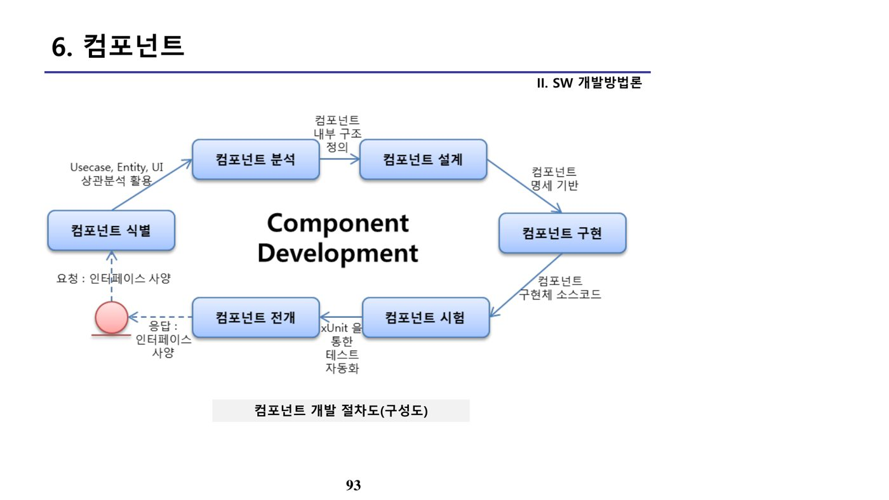
| 단계 | 내용 | 산출물 |
|---|---|---|
| 컴포넌트 식별 | Usecase, Entity, UI 등의 상관분석 기법으로 필요 컴포넌트 식별 | 컴포넌트 목록 |
| 컴포넌트 분석 | 내부 구조·제어흐름 정의, 입출력 인터페이스 명세 | 컴포넌트 인터페이스 명세 |
| 컴포넌트 설계 | 인터페이스 명세를 바탕으로 내부 구조를 구현 가능한 수준으로 설계 | 컴포넌트 내부 설계 |
| 컴포넌트 구현 | 설계 내역을 바탕으로 구현체 작성 | 컴포넌트 구현체 소스코드 |
| 컴포넌트 시험 | xUnit 등 자동화된 테스트 도구로 입출력 인터페이스 테스트 | 컴포넌트 테스트 결과 |
| 컴포넌트 전개 | 구현된 컴포넌트를 요구 시스템·조직에 전개/전달 | 컴포넌트 전개 결과 |
다. 컴포넌트와 모듈의 차이
| 구분 | 컴포넌트 | 모듈 |
|---|---|---|
| 정의 | 특정 기능 수행을 위한 독립적, 조립적 수행 가능한 SW 단위 | 시스템을 분해·추상화하여 SW 성능을 향상시키고 디버깅·시험·수정을 용이하게 하는 SW 설계기법 |
| 사용성 | 독자적으로 사용자에게 특정 서비스 제공 가능 | 다른 모듈과의 통합·연계에 의해서만 가치 있는 서비스 가능 |
| 이기종 호환 | 플랫폼·구현 기술에 독립적 | 플랫폼·구현기술에 종속적 |
| 재사용 방식 | 실행 코드 기반 | 주로 Source 기반 |
| 개발방식 | 객체지향, CBD 개발방법론 | 모듈화 프로그래밍 기법(정보공학, 구조적 개발방법론) |
컴포넌트를 통한 해결 효과는 적시성(개발 시간 단축), 품질(명세 표준을 통한 품질 보장), 비용절감(아키텍처 재사용), 적응성(Plug & Play 방식 교체), 통합성(wrapping 기술을 통한 기존/외부 시스템 연동)으로 요약된다.
라. CBD(Component Based Development) 방법론
CBD 방법론은 기 개발된 SW 컴포넌트를 조립해 새로운 시스템을 구축하는 방법으로, 객체지향의 재사용 한계를 극복한 개념이다. OOP는 Binary 형태의 표준이 없고 실제 재사용 가능한 SW를 이용한 개발이 거의 없다는 문제의식에서 등장했다.
| 구분 | CBD | OOD |
|---|---|---|
| 개발 중점 | 검색 및 조립 | 신규 개발(객체 독립성 중점) |
| 상호운영성 | 객체지향 개발 SW보다 높음 | 상대적으로 낮음 |
| 시스템 복잡성 | 낮음 | 높음 |
| 확장방법 | 인터페이스 | 상속, Dynamic Binding |
| 확장 레벨 | 실행파일(Binary Level) | 언어 재사용(Source Level) |
| 같은 점 | 유즈케이스 중심 개발, 반복·점증적 개발, 객체 개념, 아키텍처 기반 개발 | |
CBD SW표준 산출물 관리 가이드(정보시스템 구축·운영지침 제45조)의 분석 단계 산출물은 사용자 요구사항 정의서(R1)·유스케이스 명세서(R2)이며, 요구사항 추적표(R3)는 설계 이후 단계와도 연계되는 산출물로 분류된다.
10. Product Line과 통합 프로세스(UP) (원본 p.113-128)
가. Software Product Line의 개요
Product Line은 SW공학의 전체 관점에서 도메인에 특화되어 재사용할 단위인 Core Assets을 미리 개발하고, 이를 이용해 여러 Products를 만들어내는 접근방법이다. Time to market 향상, 체계적 재사용 목표 달성, 컴포넌트를 도메인 기반으로 구체화해 재사용성을 증대하는 것이 등장배경이다. CBD의 연장선상에서 재사용 개념을 코드 레벨이 아닌 비즈니스 도메인 레벨에서 식별하며, Domain Engineering 수행 후 각 Product를 만드는 Application Engineering을 수행한다.
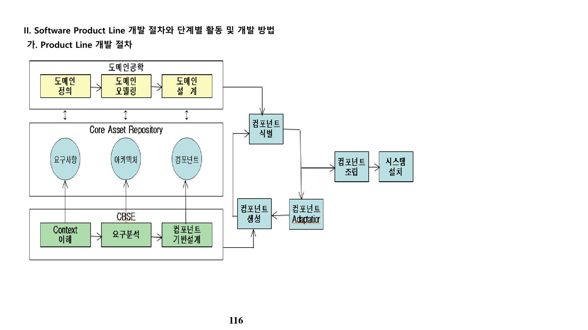
| 구분 | 내용 |
|---|---|
| Core Asset(부품개발) Development | 특정 시스템 실현에 사용될 자산 Repository를 구현하는 활동. 제품 개발과 별개 또는 개발 중 진화하며, 신제품 개발 시마다 계속 Refresh됨 |
| Product Development | 동일한 시스템 군을 기반으로 개별 시스템을 개발하는 활동. 개별 제품 요구사항에 의존적 |
| Management | 조직·기술적 관리 활동. 기술적 관리는 Core Asset·제품 개발을, 조직적 관리는 구조 정의와 자원 분배를 담당 |
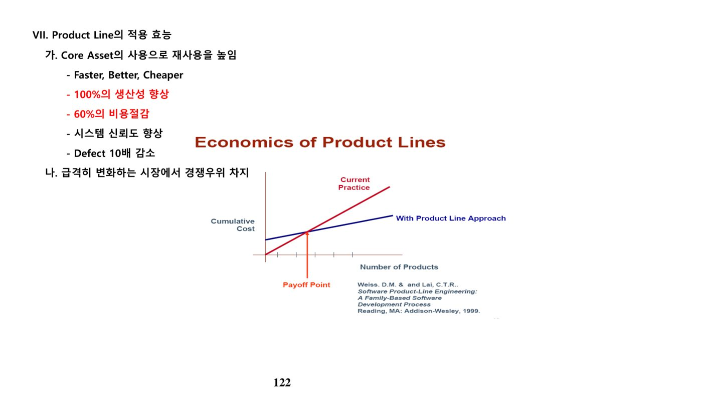
Product Line 성공을 위해서는 재사용 가능한 프로세스 정의, 상위 부서의 commitment와 sponsorship, 아키텍처 관점, Tool 활용이 필요하다(적용 사례: 군산·서울 ITS의 Data Model·공통 코드·Core Component 개발).
나. 통합 프로세스(Unified Process, UP)
UP(Unified Process)는 UML 기본 모델링을 적용하는 대표적인 반복·점증적 소프트웨어 개발 프로세스 프레임워크로, 가장 잘 알려진 정련형이 RUP(Rational Unified Process)다(그 외 OpenUP, Agile UP 등). 도입(Inception)·정련(Elaboration)·구축(Construction)·전이(Transition)의 4단계로 시스템 개발 과정을 구분하며, 각 단계는 반복(Iteration)을 통해 사용자 피드백을 요구사항에 반영한다.
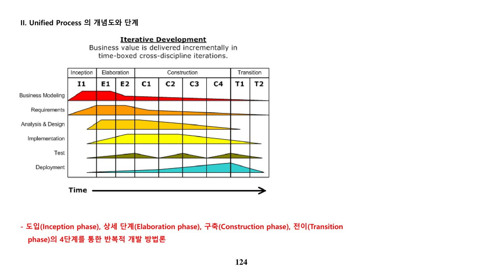
| 특징 | 설명 |
|---|---|
| Iterative and incremental | 반복적 증분형 프로세스 — 각 단계를 Timebox로 반복 |
| Architecture-centric | 아키텍처 중심의 개발방법론 |
| Risk-focused | 프로젝트팀에서 가장 위험이 큰 리스크 처리에 초점 |
정련(Elaboration) 단계는 도입 단계에서 정의된 아키텍처를 바탕으로 시스템의 세부 기능을 구현하는 데 초점을 두는 것이 아니라, 유스케이스 다이어그램·개념 다이어그램·패키지 다이어그램(아키텍처 다이어그램) 등을 작성하며 아키텍처 자체를 확정하는 단계다. 세부 기능 구현에 초점을 두는 단계는 구축(Construction)이다.
11. 요구공학 (원본 p.129-152)
가. 요구공학의 정의와 프로세스
요구공학(Requirement Engineering)은 시스템 요구사항 문서를 생성·검증·관리하기 위해 수행되는 구조화된 활동의 집합으로, 요구의 추출·분석 및 시스템의 외부 행위 기술을 포함해 요구사항 명세를 최종 산출물로 생성한다. 프로세스는 요구사항 추출 → 요구사항 분석·정의(명세) → 요구사항 검증·확인 → 요구사항 관리의 순으로 진행된다.
나. 요구사항 명세와 명세의 원리
요구사항 명세서(SRS: Software Requirement Specification)는 시스템이 무엇(What)을 수행할 것인가를 기술하며, 목표 달성을 위한 해결방법(How)은 기술하지 않는다. 고객과 개발자 간의 SW 생성 목적에 대한 동의 기준을 수립하고, 개발일정·비용산출의 근거를 제공하며, 에러 검증·확인의 기본 자료가 된다.
| 명세 원리 | 설명 |
|---|---|
| 명확성 | 각 요구사항 명세 내용은 하나의 의미만을 가져야 함 |
| 완전성 | 기능·성능·속성·인터페이스·설계제약 등 모든 시스템 요구사항이 포함 |
| 검증가능성 | 요구사항 내용의 충족 여부와 달성 정도 확인이 가능 |
| 일관성 | 명세 내용 간 상호 모순이 없어야 함 |
| 수정용이성 | 요구사항 변경 시 쉽게 수정할 수 있어야 함 |
| 추적가능성 | 각 요구사항 근거에 대한 추적과 상호참조가 가능 |
| 개발 후 이용성 | 시스템 개발 후 운영·유지보수에 효과적으로 이용 가능 |
요구사항은 기능적 요구사항(데이터 모델·데이터흐름 처리모델·프로세스 모델로 시스템 행위 기술)과 비기능적 요구사항(신뢰성·성능·보안성·사용가능성·안정성 등 시스템 전체 품질·제약사항)으로 구분된다.
다. 요구사항 도출 기법
| 기법 | 설명 | 장점 | 단점 |
|---|---|---|---|
| 인터뷰 기법 | 개인·그룹 대상 구두 정보 도출(구조적/비구조적) | 이해관계자 참여·신뢰성 확보, 단순·직접적 | 공감대 형성 최적 기법은 아님, 교육 필요 |
| 프로토타이핑 기법 | 시스템 일부를 신속·개략적으로 구축 | 사용자 이해·대응에 명세서보다 우수, 조기 실제 상황 테스트 | What보다 How에 시간 소모, 사용자 기대 변경 조장 |
| 브레인스토밍 기법 | 제한 없이 광범위한 아이디어 제기 | 단시간 내 다수 아이디어 도출 | 참여자의 창의성 보유 정도에 의존 |
| 문서 분석 기법 | 기존 시스템 문서·자료 조사(RFP, SOW, 기존 설계서 등) | 초기 자료 확보, 다른 기법 결과와 비교 확인 가능 | 기존 시스템 측면에 국한, 문서 비현행화 가능 |
| 사용자 업무관찰 기법 | 업무영역 전문가 수행환경 평가(수동적/능동적 접근) | 현실적·실질적 통찰력, 비공식 사항까지 포함 | 관찰만 가능, 시간 소모적, 예외사항 파악 어려움 |
| 사회자 회의 기법 | 회의 사회자가 그룹 토의를 계획대로 진행 | 단시간 내 요구사항 도출, 상이한 관점 파악 | 신뢰성 이슈, 민감 사안 미토론 가능, 경험 많은 진행자 필요 |
라. 요구사항 검증·관리와 추적성
요구사항 검증은 사용자 요구가 명세서에 올바르게 기술되었는지 검토하는 활동으로, 명세구조·공통어휘·타당성(일치성·완전성·현실성) 검증을 수행하며 문서화·명확성·간결성·이해성·시험성·사용성·추적성·검증성을 승인 기준으로 삼는다. 요구사항 관리는 요구사항 협상·기준선(Baseline)·변경 관리·확인(Verification, Validation)을 포함한다.
| 추적성 종류 | 설명 |
|---|---|
| 순방향 추적성 | 요구사항을 근거로 파생된 작업 산출물 추적 — 요구사항이 시스템에 적절히 반영되었는지 확인 |
| 역방향 추적성 | 작업 산출물의 근거가 되는 이전 단계 산출물 추적 — 결함의 근본 원인 식별 |
| 수직적 추적성 | 요구사항이 각 단계별 산출물로 전이되는 과정을 추적 |
| 수평적 추적성 | 요구사항과 단계별 테스트 간의 연계성 파악 |
마. 소프트웨어사업 상세 요구사항 분류기준
소프트웨어사업 관리감독에 관한 일반기준(2016년 개정)에 따르면 제안요청서 요구사항 정의 단계에서는 시스템 장비구성·기능·성능·인터페이스·데이터·테스트·보안·품질·제약사항·프로젝트 관리·프로젝트 지원 요구사항으로 분류한다. 소프트웨어 요구 명세서(SRS)에 포함되어야 할 항목을 묻는 문제에서 사용자인터페이스·성능요구·인수조건·자원에 대한 제약조건은 포함되지만, 시스템구조는 SRS에 적용하기 어려워 업체가 판단해 시스템아키텍처에 별도로 추가하며 알고리즘은 구현단계에서 적용되는 사항이다.
12. AOP(관점지향 프로그래밍) (원본 p.153-160)
가. AOP의 등장배경
| 구분 | 설명 |
|---|---|
| 기능의 분산(Scattering) | OOP 방식으로 설계한 모듈에 보안·모니터링 등의 기능이 분산되어 존재 — OOP의 SRP(단일책임원칙)를 현실에서 지키기 어려움 |
| 코드의 혼란 | Tracing·Logging·Monitoring 등 인프라스트럭처 서비스 요구가 많아지며 원래 OOP 코드가 지저분해짐 |
| OOP의 코드 유지 | OOP에 충실한 모듈의 구현이 필요 |
AOP(Aspect-Oriented Programming)는 수정·유지보수의 용이성을 향상시키기 위해, 시스템의 핵심 기능들로부터 공통의 횡단 관심사(Cross-cutting Concerns)를 추출해 별도의 프로그램(Aspect)으로 작성한 후, 핵심 기능 프로그램과 결합(Weaving)해 프로그램을 생성하는 방법이다.
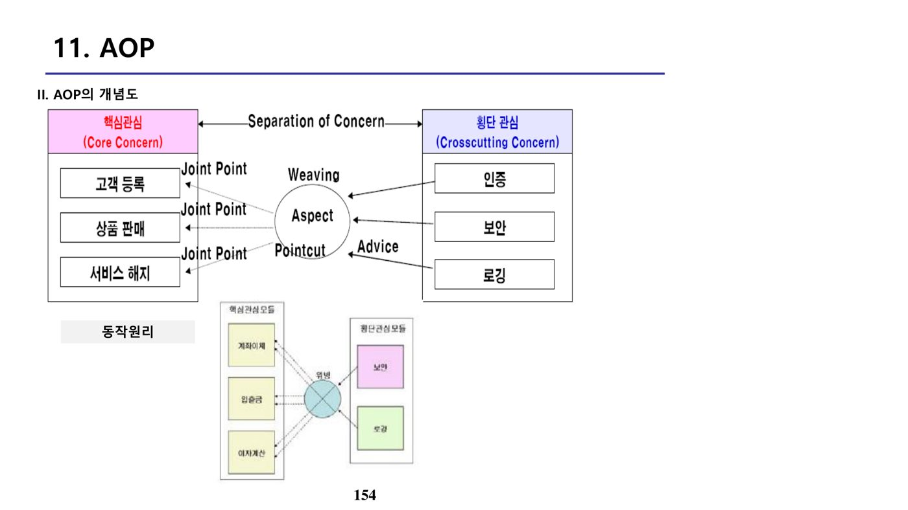
나. AOP의 구성요소
| 구성요소 | 설명 |
|---|---|
| 핵심 관심(Core Concern) | 시스템이 추구하는 핵심 기능 및 가치 |
| 횡단 관심(Cross-cutting Concern) | 핵심 관심에 공통적으로 적용되는 부가적 요구사항(보안, 인증, 로그작성, 정책 적용 등) |
| Join Point | 관심사가 주 프로그램의 어디에 횡단할 것인지를 나타내는 위치(점) — 횡단 관심의 기능이 삽입·실행될 수 있는 특정 위치 |
| Point-Cut | 어느 Join Point를 사용할 것인지 결정하는 선택 기능. AOP 언어에게 언제 조인 포인트가 매치될지 알려주는 구문(예: before, after) |
| Advice | 관심사를 구현하는 소스 코드 부분(예: Method) |
| Aspect | 특정 관심사에 관련된 코드만을 캡슐화한 것 — Point-cut과 Advice를 합쳐 놓은 클래스 형태의 코드 |
| Weaving(위빙) | Join Point에 해당하는 Advice를 삽입하는 과정 |
관점지향프로그래밍의 주요 구문을 (가)-(나)-(다) 순서로 나열하면 advice(관심사를 구현한 소스 코드) – join point(코드를 끼워 넣을 수 있는 프로그램 이벤트) – pointcut(관심사가 횡단될 위치를 지정하는 문장) 순이다.
13. TDD와 Agile 방법론 개요 (원본 p.161-174)
가. 테스트 중심 개발(TDD)의 개요
TDD(Test Driven Development)는 Simple Code 추구를 목적으로 Test Case를 먼저 개발하고 이를 통과하는 실제 코드를 나중에 개발하는 Agile 개발방법이다. Design for Testability(의존성 감소, 독립적 테스트 가능 구조), 테스트 커버리지 확보(디버깅 시간 감소), 견고성 보장(오류 조기 탐지), 기능 집중(기능 위주 테스트로 견고성 증가), Clean code that works(작동하는 깔끔한 코드)를 특징으로 한다.
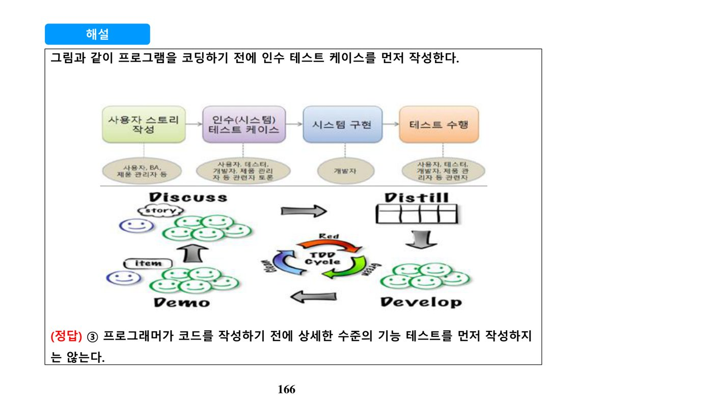
| 단계 | 내용 |
|---|---|
| 사용자 요구사항 | 사용자, BU(Business Unit), 제품 개발자 등이 요구사항의 Story 작성 |
| Test Case | 사용자·Tester 등 관련자가 Test Case를 상세하게 작성 |
| Code 작성 | 개발자가 개발 단계로 Code를 작성 |
| Refactoring | Bad smell을 제거하는 Refactoring 수행 후 Simple Code에 대한 Test 수행 |
TDD 사이클은 Red Code(실패하는 테스트) → Green Code(테스트를 통과하는 최소 코드) → Clean Code(리팩토링)로 변경되며, 프로그래머가 코드를 작성하기 전에 상세한 수준의 기능 테스트까지 먼저 작성하지는 않는다는 점(단위 테스트 수준에서 먼저 작성)에 유의한다. PoC(Proof of Concept)·Prototyping에 활용해 요구사항을 상세화하거나, Pair-Programming(선임자는 테스트 설계, 후임자는 코딩 전담), 유지보수 관점(지저분한 코드 제거·구조개선)에도 응용된다.
나. Agile 방법론의 정의와 특징
Agile 방법론은 절차보다는 사람이 중심이 되어 변화에 유연하고 신속하게 적응하면서 효율적으로 시스템을 개발하는 방법론이다. 정보시스템 수명주기가 짧아지고 'time-to-market'이 중요해지면서, 문서·절차 중심의 기존 방법론이 갖는 변화 대응의 한계를 극복하기 위해 등장했다. Predictive보다는 Adaptive(가변적 요구에 대응), 프로세스보다 사람 중심, 고객의 적극적 참여, 절차보다 개개인의 상호작용을 중시하며, 모든 경우가 아닌 중소형·아키텍처 설계·프로토타이핑에 적합하다.
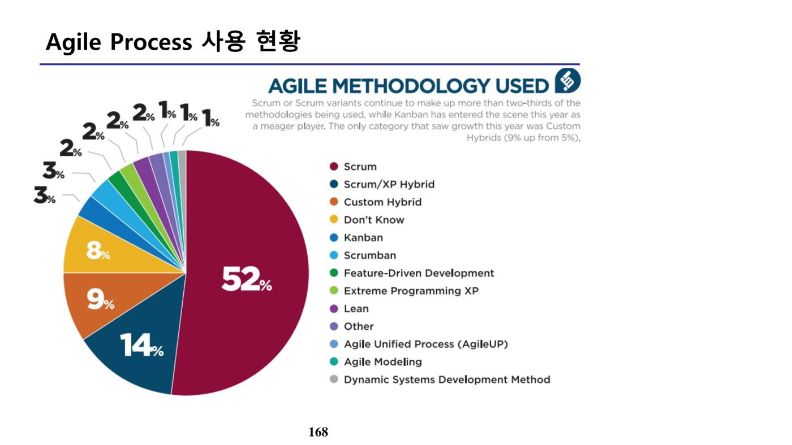
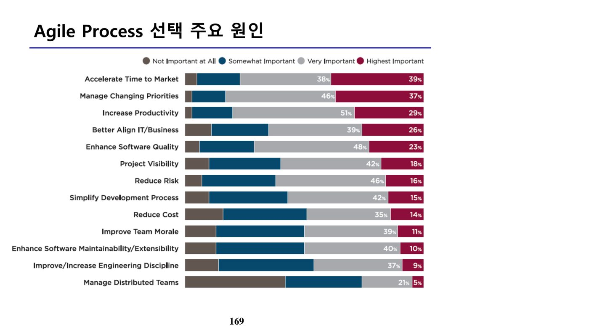
| 종류 | 특징 | 비고 |
|---|---|---|
| XP | 테스팅 강조, 5가지 가치와 12개 실천항목, 1~3주 iteration | 가장 주목받는 개발 관점 방법론 |
| SCRUM | 프로젝트를 스프린트(30일 단위 iteration)로 분리, 매일 스크럼(15분) 미팅으로 계획수립 | Iteration 계획과 Tracking에 중점 |
| UP | 완전한 SW 개발 모델 제시, Visual 모델링 도구 지원 | UP에서 Agility 성격을 특히 강조 |
| Kanban | 칸반 프로세스 | 도요타 시스템 기원 |
| Lean | 린 프로세스 및 사상 | 린 사상 |
| 항목 | Agile 개발 방법론 | 전통적 개발 방법론 |
|---|---|---|
| 계획수립 | 바로 다음 반복주기(Iteration)에 대해서만 상세 계획 | 이어지는 단계까지 상세한 계획수립 |
| 요구사항 베이스라인 | 베이스라인 설정을 강조하지 않음 | 초기 요구사항에 대한 Baseline 설정 |
| 아키텍처 정의 | 실제 기능 구현으로 빠르게 아키텍처 실현 가능성 증명 | 모델·사양의 상세화를 통해 초기에 정의 |
| 테스트 방법 | 잦은 "개발-테스트" 주기로 조기 검증 | 기능 구현 후 단위-통합-시스템으로 확장 |
Agile 방법론은 프로세스 정립이 부족하고 대형 프로젝트·감리 대응이 어렵다는 부정적 측면이 있지만, 중소형 프로젝트와 아키텍처 설계·프로토타이핑 수립 태스크에는 적합하다는 긍정적 측면도 함께 평가된다.
14. XP(eXtreme Programming) (원본 p.175-188)
가. XP의 개념과 5대 핵심가치("용단커피존")
XP(eXtreme Programming)는 의사소통을 개선하고 즉각적인 피드백으로 단순하게 코딩하여 SW 품질을 높이는 방법론으로, 라이프사이클 후반부라도 요구사항 변경에 적극적으로 대처하는 역발상의 개발 방법이다. 5가지 핵심 가치는 "용단커피존"(용기·단순성·의사소통·피드백·존경)으로 암기한다.
| Core Value | 내용 |
|---|---|
| 단순성(Simplicity) | 부가적 기능, 사용되지 않는 구조와 알고리즘 배제 |
| 의사소통(Communication) | 실제 개발자들 사이의 의사소통을 통한 개발 사이클 채택 |
| 피드백(Feedback) | 빠른 피드백이 기본 원칙 — 해결할 수 있는 일을 먼저 처리 |
| 용기(Courage) | 고객의 요구사항 변화에 능동적으로 대처 |
| 존경(Respect) | 팀원 간의 상호 존중 |
나. XP 12가지 실천 방법(Practice)
| 실천 항목 | 설명 |
|---|---|
| 1. Planning game | User Story를 이용해 Next Release의 범위를 빠르게 결정. 2주 주기로 계획을 세우고 진척을 검사 |
| 2. Small/short releases | 필요한 기능만 갖춘 간단한 시스템을 빠르게 프러덕션화, 짧은(2주) 사이클로 자주 배포 |
| 3. Metaphor | 최종 개발되어야 할 Product를 설명하는 은유 — 공통된 개념 공유 |
| 4. Simple design | 현재 요구사항을 만족시키도록 가능한 한 단순하게 설계 |
| 5. Testing | 개발자는 단위 테스트, 고객은 기능 테스트를 작성해 요구사항 반영 여부 확인 |
| 6. Refactoring | 기능을 바꾸지 않으면서 중복 제거·커뮤니케이션 향상·단순화를 위해 설계를 지속 상세화 |
| 7. Pair programming | 하나의 컴퓨터에 두 사람이 앉아 함께 프로그래밍(Driver/Partner) |
| 8. Collective(code) ownership | 시스템의 코드는 누구든지 언제라도 수정 가능(코드 공동 공유) |
| 9. Continuous integration | 자주 소스를 통합해 빌드(CI/CD로 발전) |
| 10. 40-hour week | 주당 40시간 이상 일하지 않도록 하며, 2주 연속 오버타임 금지 |
| 11. On-site customer | 개발자 질문에 즉각 대답할 고객을 프로젝트에 풀타임 상주시켜 의사소통 향상 |
| 12. Coding standards | 팀원 간 커뮤니케이션 향상을 위해 표준화된 관례에 따라 코드 작성 |
다. XP 개발 절차와 구성요소
| 구성요소 | 설명 |
|---|---|
| 사용자스토리 | 사용자 요구사항(UML 유스케이스와 같은 목적). 배포 계획의 시간 계산에 사용, 요구사항 문서 대신 사용 가능. 인수테스트 시 활용 |
| 스파이크 | 어려운 요구사항·잠재적 솔루션 고려를 위한 간단한 프로그램. 신뢰성 증대 및 기술적 위험 감소 목적 |
| 배포계획 | 전체 프로젝트의 배포 계획을 생성, 프로젝트 수행 규칙 정의 |
| 반복 | 1~3주 단위로 반복(민첩함 중시), 반복 계획 미팅을 통해 사용자 요구 변경에 대처 |
| 인수테스트 | 고객이 시스템의 진척사항을 확인하고 명세한 테스트 통과 여부 파악 |
| 작업배포 | XP 주기의 마지막 단계 — 소규모·빈번한 배포로 고객에게 조기 이득 제공 |
XP 프로세스(계획수립 → 설계 → 코딩 → 테스팅) 중 테스팅 단계는 코딩 전에 단위 테스트 케이스를 먼저 생성하고 이후 인수 테스트가 이루어지는 것이지, "코딩 후에 단위 테스트 케이스를 생성"하는 것이 아니다(TDD의 Test-First 원칙과 일치). XP 12가지 실천사항에는 "통계적 품질 관리"가 포함되지 않으며, 제네릭 프로그래밍(Generic Programming)은 XP와 직접적 관련이 없는 개념이다(데이터 형식에 의존하지 않는 프로그래밍 방식).
15. SCRUM (원본 p.189-193)
가. SCRUM의 정의와 프로세스
SCRUM은 1986년 일본에서 발표된 개발 환경을 최대한으로 이용해 반복적인 프로세스로 고정된 특성을 반복적으로 조정하는 세트로, 비즈니스 요구 사항을 반영하고 시장 요구에 신속하게 반응하는 관리 및 제어 프로세스다. Agile Methodology, 특히 Scrum은 기본적으로 Iterative and incremental 개발 방법에 기초한다.
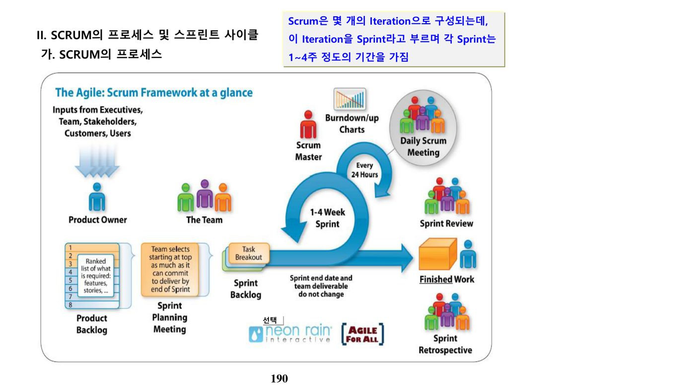
| 구성요소 | 설명 |
|---|---|
| Product Backlog | 개발할 제품에 대한 요구사항 목록. 시스템에 포함되어야 할 기능·특성·기술을 모두 나열하고 우선순위를 매김. 프로젝트 진행에 따라 진화·변경 |
| Sprint Backlog | 해당 Sprint 기간에 수행되어야 하는 Task 목록으로, Product Backlog에서 선택 |
| Sprint | 통상 4~6주(30일) 정도의 Timebox 성격을 가진 반복 개발 주기. 종료 시 새 기능이 추가된 실행 가능 제품이 인도되어야 함 |
| Daily Scrum | 매일 약 15분의 짧은 회의. 스크럼 마스터가 진척 사항, 정상적 종료를 방해하는 위험, 작업 계획을 확인 |
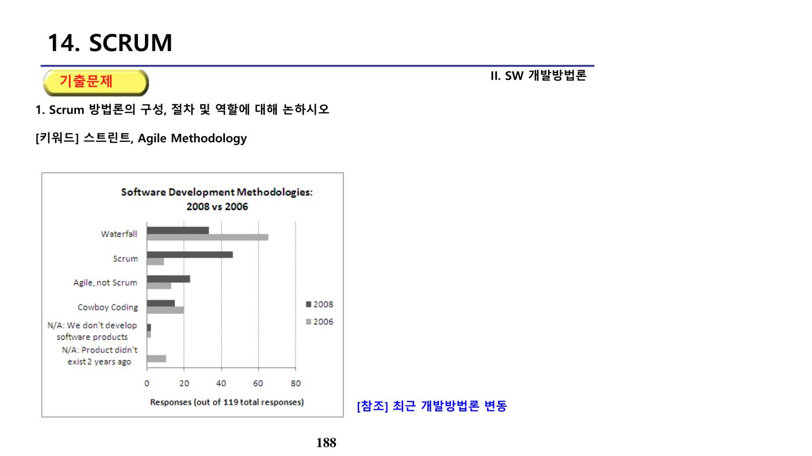
나. SCRUM과 타 애자일 방법론의 비교
| 종류 | 특징 | 비고 |
|---|---|---|
| XP | 테스트 강조, 1~3주 iteration, 4가지 가치, 12개 실천 항목 | 가장 주목받는 개발 관점 방법론 |
| SCRUM | 스프린트(30일 단위 iteration)로 분리, 매일 스크럼(15분) 미팅으로 계획수립 | Iteration 계획과 Tracking에 중점 |
| RUP | 완전한 SW 개발 모델 제시, Visual 모델링 도구 지원 | RUP에서 Agility 성격을 특히 강조 |
| Crystal | 프로젝트 상황에 따라 알맞은 방법론 적용, Tailoring 원칙 제공 | 프로젝트 중요도·크기별 메소드 선택 방법 제시 |
16. Lean·Kanban과 CI/CD (원본 p.194-208)
가. Agile Methodology의 보완과 성공적 정착
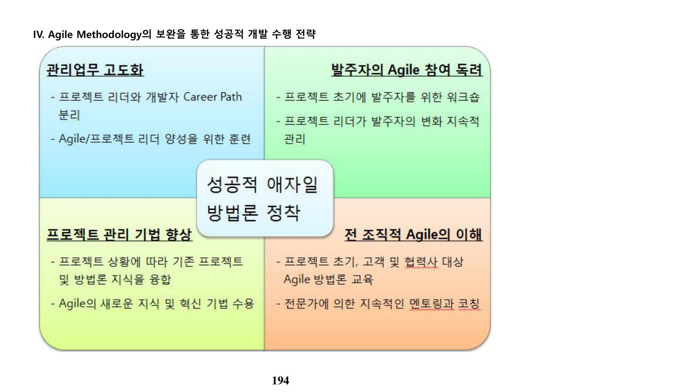
나. 린 소프트웨어 개발(Lean Software Development)
린 소프트웨어 개발은 TPS(Toyota Production System)를 벤치마킹해 재정립한 린 시스템의 품질 기법을 소프트웨어 개발 프로세스에 적용하여, 프로세스의 낭비 요소를 제거하고 결과를 측정·분석해 품질을 향상시키는 개발 방법론이다. TPS의 핵심 개념인 JIT(Just In Time)은 다양성으로 인한 비용 증가 요인을 제거해 복잡도를 통제하는 것이 목적이며, 린 원칙은 공급망·제품개발을 거쳐 소프트웨어 개발까지 확장되었다.
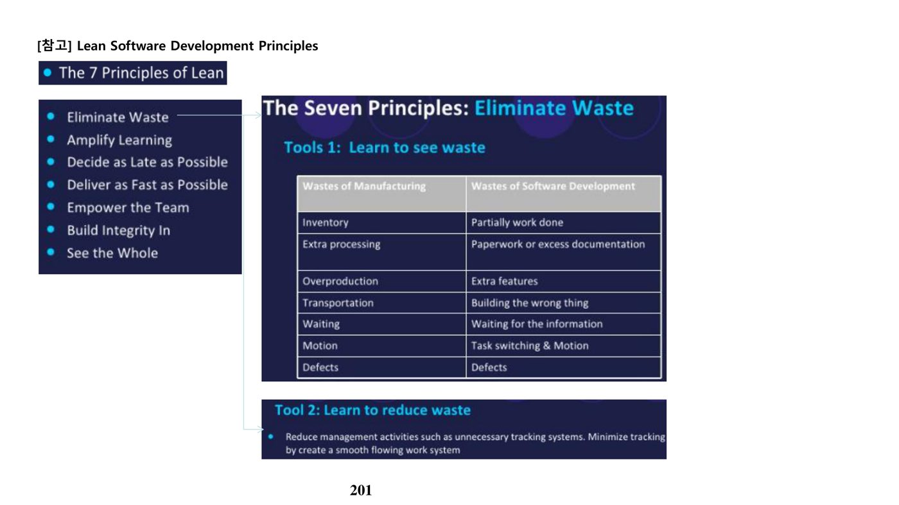
| 원칙 | 핵심 항목 | 설명 |
|---|---|---|
| 낭비제거 | 가외기능, 혼란, 경계 넘어가기 | 80%의 가치를 제공하는 20% 기능에 집중하고 나머지는 미룸. 조직 간 경계는 25% 이상 비용을 증가시킴 |
| 품질 내재화 | TDD, 레거시 코드 작성금지, 빅뱅통합 지양 | 실행 가능한 명세로 코드 실수를 방지하고 지속적 통합으로 품질을 코드에 내재화 |
| 지식 창출 | 과학적 방법 사용, 표준 개선, 예측 가능한 조직 | 가설-실험을 반복하고, 피드백에 기반해 예측 가능한 성과를 추구 |
| 늦은 확정 | 비의존성, 옵션 유지, 돌이킬 수 없는 결정은 마지막에 | 중대한 결정은 불확실성이 해소되는 마지막 순간까지 보류 |
| 빠른 인도 | 신속한 인도, 대기행렬이론, 일의 양 제한 | 고품질과 저비용을 유지하면서도 빠르게 인도, WIP를 제한해 안정적 속도 유지 |
| 사람 존중 | 상호간 책임의식, 리더십, 파트너 존중 | 팀은 자부심·책임감·신뢰·칭찬을 통해 번성 |
| 전체 최적화 | 전체 가치흐름 집중, 완전한 제품 인도, 더 높은 것을 측정 | 주문에서 배치까지 전체 가치 흐름을 최적화, 측정 항목을 줄여 핵심만 측정 |
다. 린 소프트웨어 개발의 7대 낭비와 칸반(Kanban)
| 7대 낭비 | 설명 |
|---|---|
| 미완성 작업(Partial Done Work) | 통합·테스트·문서화를 모두 마친 배포 가능 코드까지 빠르게 흐르지 못하고 쌓인 재고(코드로 옮기지 않은 문서, 테스트하지 않은 코드 등) |
| 가외기능(Extra Feature) | 고객이 현재 필요로 하지 않는 기능을 추가하는 낭비 |
| 재학습(Relearning) | 지식을 가진 사람을 끌어들이지 못해 다시 학습하는 낭비 |
| 이관(Handoff) | 업무 이관 시 암묵지가 문서로 전달되지 못해 정보가 손실되는 낭비 |
| 작업전환(Task Switching) | 다른 작업으로 전환하며 집중이 분산되고 시간을 소모하는 낭비 |
| 지연(Delays) | 개발자 가용 상태를 기다리며 발생하는 낭비 |
| 결함(Defects) | 단위·인수 테스트로 결함 유입을 조기에 걸러내지 못해 발생하는 낭비 |
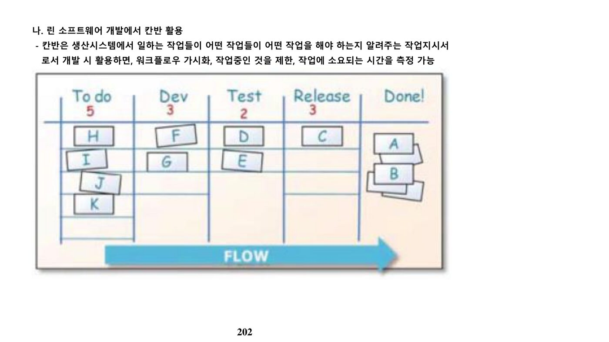
| 단계 | 설명 |
|---|---|
| 워크플로우 가시화 | 일을 작게 나누어 분류하고, 현재 단계를 알 수 있도록 워크플로우 열에 제목을 붙임 |
| 공정중관리(WIP) | 워크플로우 공정상 진행 중인 항목 수를 파악하고 최소화 |
| 작업 소요시간 측정 | 한 항목을 완료하는 데 걸리는 평균시간(사이클 타임)을 측정해 프로세스를 최적화 |
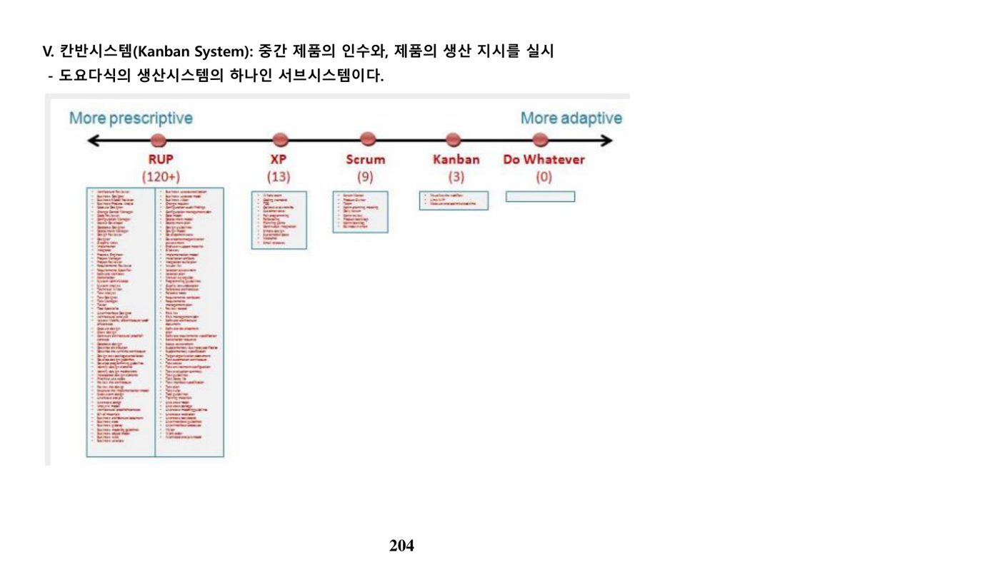
라. Scrum · Kanban · Lean 비교
| 항목 | Scrum | Kanban | Lean |
|---|---|---|---|
| 수행원리 | Sprint를 통한 반복적 개발 | Workflow를 통한 연속적 개발 | 낭비 제거(사상 중심) |
| 수행규칙 | 3역할자(PO·SM·Team), 3미팅(Sprint planning·Daily scrum·Review), 3산출물(Product/Sprint Backlog·Burndown chart) | Workflow 시각화, WIP 제한, 소요시간 측정·최적화 | - |
| 수행단위 | Sprint backlog를 통한 Time boxing | WIP 제한을 통한 작업량 조절 | - |
| 공정관리 | Burndown chart와 Velocity 측정 | Workflow 가시화와 WIP 제한 | - |
마. CI/CD(Continuous Integration/Continuous Delivery)
지속적 통합(Continuous Integration)은 팀원들이 자신의 작업을 빈번하게(보통 하루에도 여러 번) 통합하는 소프트웨어 개발 관행으로, 각 통합은 자동화된 빌드(테스트 포함)로 검증되어 통합 오류를 최대한 빠르게 발견한다. 이 접근법은 통합 문제를 크게 줄이고 팀이 응집력 있는 소프트웨어를 더 신속하게 개발할 수 있게 해준다. XP의 Continuous Integration 실천법이 이후 Jenkins 등의 CI/CD 도구·파이프라인으로 발전했으며, 소스의 커밋을 감지해 자동화된 빌드·테스트·배포 단계를 실행하는 방식으로 실무에 정착되었다.
📚 전체 기출·예상문제 (16문항) — 원문 수록
본 강좌 원본 PDF에 수록된 기출·예상문제를 빠짐없이 원문 그대로 정리했습니다. 정답·해설은 강의 원문 기준입니다.